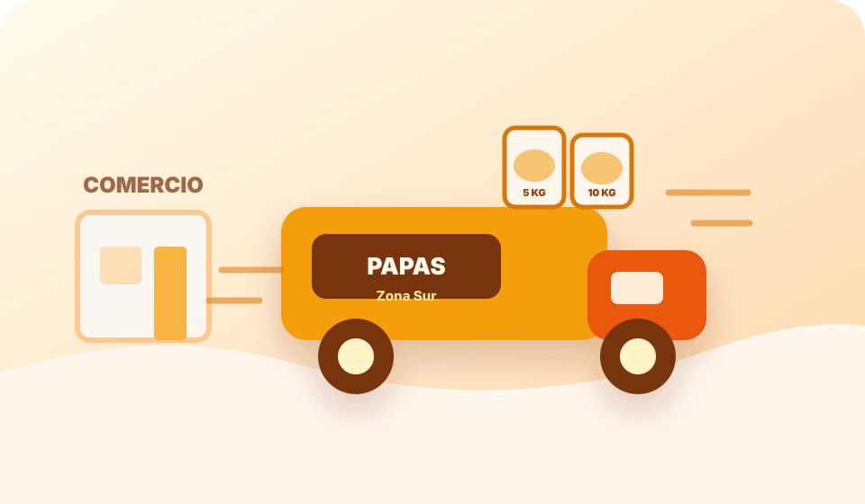

01 · Exhibición
Papas lavadas
Producto limpio, seleccionado y preparado para una mejor presentación en el punto de venta.
Proveedor mayorista de papas envasadas en Zona Sur
Venta mayorista para verdulerías, almacenes, supermercados y gastronomía. Presentación prolija, reposición simple y atención directa por WhatsApp para coordinar cantidad, zona y disponibilidad.
Atención
Zona Sur
Modalidad
Mayorista
Producto
Envasado
Pedido mayorista

Para góndola: mejor presentación, stock ordenado y reposición simple.
Para cocina: abastecimiento regular para rotiserías y restaurantes.
La papa envasada ayuda a vender con una imagen más limpia y ordenada. Es práctica para exhibir, controlar stock y ofrecer un producto listo para el cliente final.
01 · Exhibición
Producto limpio, seleccionado y preparado para una mejor presentación en el punto de venta.
02 · Presentación
Formato práctico para góndola, exhibición, almacenes, verdulerías y autoservicios.
03 · Abastecimiento
Abastecimiento por cantidad para comercios, distribuidores, gastronómicos y revendedores.
Zona Sur
Entrega coordinada
Para cotizar mejor, enviá localidad, tipo de comercio, cantidad estimada y frecuencia de compra. Con esos datos se responde presentación, disponibilidad y zona de entrega.
Indicá localidad, cantidad y tipo de comercio.
Papas para exhibición, reventa o uso gastronómico.
Según disponibilidad, volumen y zona de reparto.
Abastecemos a negocios que necesitan continuidad, buena presentación y un proveedor fácil de contactar.
Comercio minorista
Papas listas para exhibir, vender por unidad o sumar como producto envasado.
Producto para góndola →Reposición
Presentación práctica para góndola, exhibición y reposición más simple.
Stock ordenado →Cocina
Opciones para casas de comida, parrillas, restaurantes y cocinas comerciales.
Uso gastronómico →Mayorista
Consultas por cantidad, continuidad de compra y cobertura dentro de Zona Sur.
Compra por volumen →Atendemos consultas mayoristas por localidad para que cada comercio encuentre rápido información útil sobre papas envasadas cerca de su zona.

Cobertura comercial
Elegí tu localidad, revisá la información comercial y escribí por WhatsApp indicando cantidad estimada y tipo de negocio.
Landing por localidad para encontrar rápido tu zona.
Contacto directo para pedir precio y disponibilidad.
Una de las búsquedas principales de la zona. También se atienden consultas de Adrogué, Rafael Calzada, Burzaco, Temperley, Banfield y Lomas de Zamora.
La venta está orientada a verdulerías, almacenes, autoservicios, supermercados de barrio, rotiserías, restaurantes, comercios gastronómicos, revendedores y distribuidores.
La propuesta está enfocada en papas seleccionadas con presentación envasada, pensadas para mejorar la exhibición, ordenar el stock y facilitar la venta al cliente final.
Se reciben consultas de comercios de Zona Sur, incluyendo José Mármol, Adrogué, Lomas de Zamora, Banfield, Temperley, Burzaco, Avellaneda, Quilmes, Lanús y localidades cercanas.
La cantidad mínima puede variar según disponibilidad, presentación y zona de entrega. Para una respuesta precisa conviene consultar por WhatsApp con el volumen aproximado que necesitás.
Enviá localidad, tipo de comercio, cantidad estimada, frecuencia de compra y si necesitás papas para góndola, reventa o uso gastronómico.
Sí. Además de comercios de reventa, las papas envasadas pueden ser útiles para rotiserías, restaurantes, parrillas, casas de comida y cocinas comerciales que necesitan abastecimiento regular.
Consultá por venta mayorista, presentación, cantidad mínima y distribución en Zona Sur.
Enviar WhatsApp